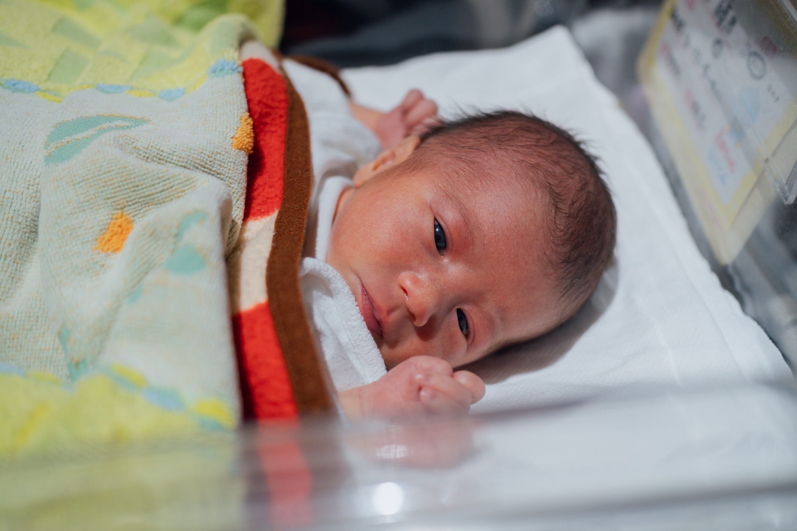

01
Henri, un jour
Henri est né le 13 juin 2025 à 4h41 du matin, en avance sur le terme, 49 cm et 2 770 g. Ayano était à Kyoto avec sa mère, Ayako. Serge était à Tokyo ; il est parti dès qu'il a eu la nouvelle. Nous sommes restés cinq jours à la maternité. La famille ne pouvait venir que deux heures par après-midi, et ces deux heures sont devenues le centre de la journée : Jacques et Mihoko le premier jour, Katsuhiro quelques jours plus tard, entre deux services de bus.